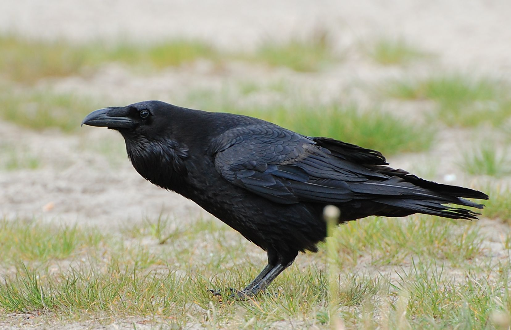
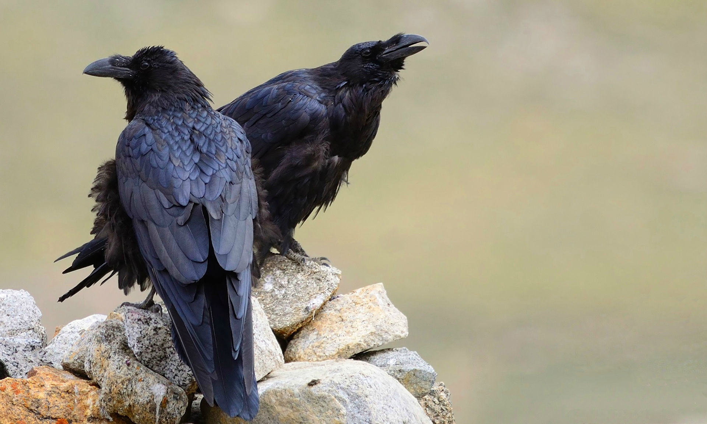
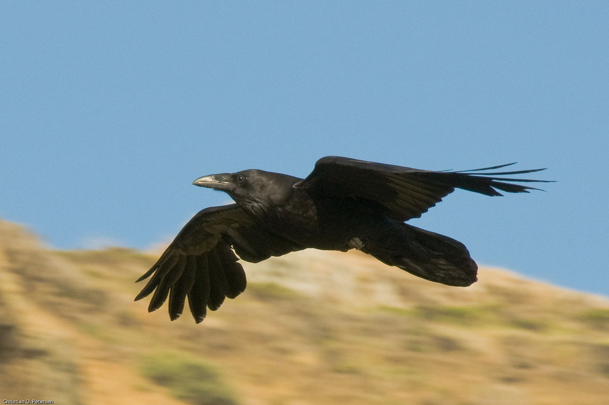
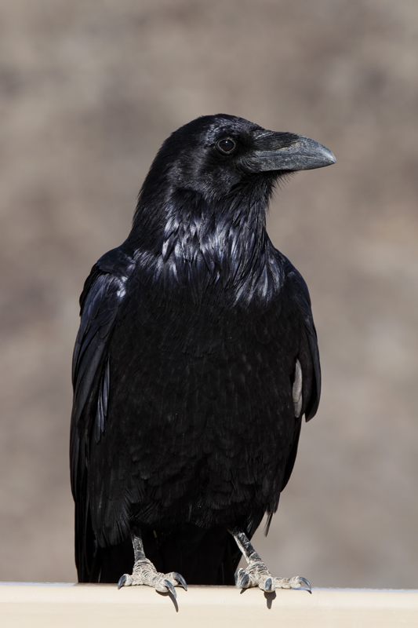

ГЛАВНАЯ
ГАЛЕРЕЯ
СТАТЬИ
ИСТОЧНИКИ
ГАЛЕРЕЯ
C. c. corax
Вся европейская часть ареала вида (без Испании и Португалии) на юг до Крыма, Кавказа, Копетдага, северного Ирана; Западная и Средняя Сибирь.

C. c. varius
Исландия и Фарерские острова.
C. c. subcorax
Греция, Центральная Азия, запад Китая, кроме Гималаев.
C. c. tingitanus
Северная Африка, на юг до Суса (южнее Атласа), на восток до Киренаики и Мерса-Матрух; Канарские острова.
C. c. tibetanus
Греция, Центральная Азия, запад Китая, кроме Гималаев.

C. c. kamtschaticus
Сибирь к востоку от Лены на юг до Забайкалья и Монголии.
C. c. principalis
Гренландия и Арктическая Северная Америка до Британской Колумбии.

C. c. sinuatus
Запад США, на юге до севера Гондураса и Мексики и прилегающих островов.

. Имеет 2 варианта окраса: бело-пегий и более тёмный, почти чёрный, оперение менее блестящее, чем у обыкновенного ворона. Размер средний.С 1948 года подвид пегого окраса никем не был замечен. Считается вымершим. На данный момент сохранилось 15 чучел птицы этого цветового варианта в различных музеях (6 в Копенгагене, 4 в Нью-Йорке, 2 в Уппсала, 1 в Лейдене, 1 в Брауншвейге и 1 в Дрездене). 12 Июня 1995 года были выпущены марки, изображающие этого ворона (иллюстратор — Астрид Андризен).")
")